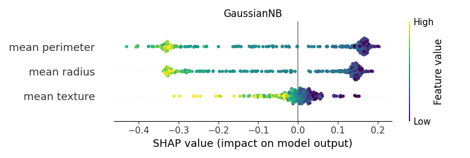

Note
Click here to download the full example code
02. Basic example
Computing SHAP values for different classifiers to understand which type of SHAP explainers can be used with the different algorithms.
- 


Out:
<IPython.core.display.HTML object>
--------------------------------------------------------------------------------
Classifier: GaussianNB()
Kernel type: <class 'shap.explainers._kernel.Kernel'>
0%| | 0/375 [00:00<?, ?it/s]
2%|###9 | 9/375 [00:00<00:04, 84.12it/s]
5%|########2 | 19/375 [00:00<00:03, 92.67it/s]
8%|############# | 30/375 [00:00<00:03, 98.51it/s]
11%|#################7 | 41/375 [00:00<00:03, 102.15it/s]
14%|######################4 | 52/375 [00:00<00:03, 104.19it/s]
17%|###########################6 | 64/375 [00:00<00:02, 106.28it/s]
20%|################################4 | 75/375 [00:00<00:02, 107.12it/s]
23%|#####################################1 | 86/375 [00:00<00:02, 107.11it/s]
26%|#########################################9 | 97/375 [00:00<00:02, 107.34it/s]
29%|##############################################3 | 108/375 [00:01<00:02, 107.82it/s]
32%|################################################### | 119/375 [00:01<00:02, 108.15it/s]
35%|#######################################################8 | 130/375 [00:01<00:02, 108.38it/s]
38%|############################################################5 | 141/375 [00:01<00:02, 108.25it/s]
41%|#################################################################2 | 152/375 [00:01<00:02, 108.45it/s]
43%|#####################################################################9 | 163/375 [00:01<00:01, 108.91it/s]
46%|##########################################################################7 | 174/375 [00:01<00:01, 108.91it/s]
49%|###############################################################################4 | 185/375 [00:01<00:01, 108.59it/s]
52%|####################################################################################1 | 196/375 [00:01<00:01, 108.43it/s]
55%|########################################################################################8 | 207/375 [00:01<00:01, 108.57it/s]
58%|#############################################################################################5 | 218/375 [00:02<00:01, 108.67it/s]
61%|##################################################################################################7 | 230/375 [00:02<00:01, 109.12it/s]
64%|#######################################################################################################4 | 241/375 [00:02<00:01, 109.06it/s]
67%|############################################################################################################1 | 252/375 [00:02<00:01, 108.78it/s]
70%|################################################################################################################9 | 263/375 [00:02<00:01, 108.82it/s]
73%|#####################################################################################################################6 | 274/375 [00:02<00:00, 108.85it/s]
76%|##########################################################################################################################3 | 285/375 [00:02<00:00, 107.91it/s]
79%|############################################################################################################################### | 296/375 [00:02<00:00, 107.89it/s]
82%|###################################################################################################################################8 | 307/375 [00:02<00:00, 107.92it/s]
85%|########################################################################################################################################5 | 318/375 [00:02<00:00, 108.53it/s]
88%|#############################################################################################################################################2 | 329/375 [00:03<00:00, 108.65it/s]
91%|##################################################################################################################################################4 | 341/375 [00:03<00:00, 109.10it/s]
94%|#######################################################################################################################################################1 | 352/375 [00:03<00:00, 107.48it/s]
97%|###########################################################################################################################################################8 | 363/375 [00:03<00:00, 107.89it/s]
100%|################################################################################################################################################################5| 374/375 [00:03<00:00, 108.51it/s]
100%|#################################################################################################################################################################| 375/375 [00:03<00:00, 107.38it/s]
[[-0.21 -0.19 -0.22]
[ 0.16 0.05 0.17]
[-0.31 0.06 -0.31]
...
[-0.1 0.07 -0.14]
[ 0.15 0.03 0.16]
[-0.2 0.15 -0.25]]
base value: 0.6256054145239283
0%| | 0/375 [00:00<?, ?it/s]
3%|#####1 | 12/375 [00:00<00:03, 110.09it/s]
6%|##########3 | 24/375 [00:00<00:03, 109.50it/s]
10%|###############5 | 36/375 [00:00<00:03, 109.77it/s]
13%|####################3 | 47/375 [00:00<00:03, 108.70it/s]
15%|######################### | 58/375 [00:00<00:02, 108.77it/s]
19%|##############################2 | 70/375 [00:00<00:02, 109.23it/s]
22%|##################################9 | 81/375 [00:00<00:02, 109.13it/s]
25%|#######################################7 | 92/375 [00:00<00:02, 109.06it/s]
27%|############################################2 | 103/375 [00:00<00:02, 109.25it/s]
30%|################################################9 | 114/375 [00:01<00:02, 108.82it/s]
33%|#####################################################6 | 125/375 [00:01<00:02, 109.17it/s]
36%|##########################################################3 | 136/375 [00:01<00:02, 109.09it/s]
39%|###############################################################1 | 147/375 [00:01<00:02, 109.04it/s]
42%|###################################################################8 | 158/375 [00:01<00:01, 108.93it/s]
45%|########################################################################5 | 169/375 [00:01<00:01, 108.93it/s]
48%|#############################################################################7 | 181/375 [00:01<00:01, 109.30it/s]
51%|##################################################################################4 | 192/375 [00:01<00:01, 109.50it/s]
54%|#######################################################################################1 | 203/375 [00:01<00:01, 109.33it/s]
57%|###########################################################################################8 | 214/375 [00:01<00:01, 108.96it/s]
60%|################################################################################################6 | 225/375 [00:02<00:01, 109.00it/s]
63%|#####################################################################################################3 | 236/375 [00:02<00:01, 108.98it/s]
66%|##########################################################################################################4 | 248/375 [00:02<00:01, 109.33it/s]
69%|###############################################################################################################1 | 259/375 [00:02<00:01, 109.21it/s]
72%|###################################################################################################################9 | 270/375 [00:02<00:00, 108.89it/s]
75%|######################################################################################################################### | 282/375 [00:02<00:00, 109.26it/s]
78%|#############################################################################################################################7 | 293/375 [00:02<00:00, 109.16it/s]
81%|##################################################################################################################################5 | 304/375 [00:02<00:00, 109.09it/s]
84%|#######################################################################################################################################6 | 316/375 [00:02<00:00, 109.40it/s]
87%|############################################################################################################################################3 | 327/375 [00:02<00:00, 109.01it/s]
90%|#################################################################################################################################################1 | 338/375 [00:03<00:00, 108.98it/s]
93%|#####################################################################################################################################################8 | 349/375 [00:03<00:00, 109.28it/s]
96%|##########################################################################################################################################################5 | 360/375 [00:03<00:00, 109.17it/s]
99%|###############################################################################################################################################################2 | 371/375 [00:03<00:00, 109.09it/s]
100%|#################################################################################################################################################################| 375/375 [00:03<00:00, 109.13it/s]
--------------------------------------------------------------------------------
Classifier: LogisticRegression()
Kernel type: <class 'shap.explainers._kernel.Kernel'>
0%| | 0/375 [00:00<?, ?it/s]
3%|#####1 | 12/375 [00:00<00:03, 111.11it/s]
6%|##########3 | 24/375 [00:00<00:03, 111.72it/s]
10%|###############5 | 36/375 [00:00<00:03, 111.44it/s]
13%|####################7 | 48/375 [00:00<00:02, 111.00it/s]
16%|#########################9 | 60/375 [00:00<00:02, 111.41it/s]
19%|###############################1 | 72/375 [00:00<00:02, 111.31it/s]
22%|####################################2 | 84/375 [00:00<00:02, 111.25it/s]
26%|#########################################4 | 96/375 [00:00<00:02, 111.20it/s]
29%|##############################################3 | 108/375 [00:00<00:02, 110.92it/s]
32%|###################################################5 | 120/375 [00:01<00:02, 110.98it/s]
35%|########################################################6 | 132/375 [00:01<00:02, 111.02it/s]
38%|#############################################################8 | 144/375 [00:01<00:02, 111.05it/s]
42%|##################################################################9 | 156/375 [00:01<00:01, 111.38it/s]
45%|########################################################################1 | 168/375 [00:01<00:01, 111.06it/s]
48%|#############################################################################2 | 180/375 [00:01<00:01, 111.08it/s]
51%|##################################################################################4 | 192/375 [00:01<00:01, 111.40it/s]
54%|#######################################################################################5 | 204/375 [00:01<00:01, 111.31it/s]
58%|############################################################################################7 | 216/375 [00:01<00:01, 111.02it/s]
61%|#################################################################################################8 | 228/375 [00:02<00:01, 111.36it/s]
64%|####################################################################################################### | 240/375 [00:02<00:01, 111.28it/s]
67%|############################################################################################################1 | 252/375 [00:02<00:01, 111.23it/s]
70%|#################################################################################################################3 | 264/375 [00:02<00:01, 110.89it/s]
74%|######################################################################################################################4 | 276/375 [00:02<00:00, 110.70it/s]
77%|###########################################################################################################################6 | 288/375 [00:02<00:00, 110.83it/s]
80%|################################################################################################################################8 | 300/375 [00:02<00:00, 110.91it/s]
83%|#####################################################################################################################################9 | 312/375 [00:02<00:00, 110.97it/s]
86%|###########################################################################################################################################1 | 324/375 [00:02<00:00, 111.01it/s]
90%|################################################################################################################################################2 | 336/375 [00:03<00:00, 110.50it/s]
93%|#####################################################################################################################################################4 | 348/375 [00:03<00:00, 110.72it/s]
96%|##########################################################################################################################################################5 | 360/375 [00:03<00:00, 110.53it/s]
99%|###############################################################################################################################################################7 | 372/375 [00:03<00:00, 110.71it/s]
100%|#################################################################################################################################################################| 375/375 [00:03<00:00, 111.03it/s]
[[ 0.12 -0.19 -0.53]
[-0.26 0.04 0.61]
[ 0.12 0.1 -0.38]
...
[-0.01 0.05 -0.36]
[ 0.06 0.03 0.09]
[ 0.04 0.14 -0.39]]
base value: 0.6042417816207093
0%| | 0/375 [00:00<?, ?it/s]
3%|#####1 | 12/375 [00:00<00:03, 112.53it/s]
6%|##########3 | 24/375 [00:00<00:03, 111.44it/s]
10%|###############5 | 36/375 [00:00<00:03, 111.76it/s]
13%|####################7 | 48/375 [00:00<00:02, 111.51it/s]
16%|#########################9 | 60/375 [00:00<00:02, 111.36it/s]
19%|###############################1 | 72/375 [00:00<00:02, 111.28it/s]
22%|####################################2 | 84/375 [00:00<00:02, 111.39it/s]
26%|#########################################4 | 96/375 [00:00<00:02, 111.30it/s]
29%|##############################################3 | 108/375 [00:00<00:02, 111.24it/s]
32%|###################################################5 | 120/375 [00:01<00:02, 111.52it/s]
35%|########################################################6 | 132/375 [00:01<00:02, 111.15it/s]
38%|#############################################################8 | 144/375 [00:01<00:02, 111.36it/s]
42%|##################################################################9 | 156/375 [00:01<00:01, 111.29it/s]
45%|########################################################################1 | 168/375 [00:01<00:01, 111.23it/s]
48%|#############################################################################2 | 180/375 [00:01<00:01, 111.51it/s]
51%|##################################################################################4 | 192/375 [00:01<00:01, 111.70it/s]
54%|#######################################################################################5 | 204/375 [00:01<00:01, 111.52it/s]
58%|############################################################################################7 | 216/375 [00:01<00:01, 111.71it/s]
61%|#################################################################################################8 | 228/375 [00:02<00:01, 111.53it/s]
64%|####################################################################################################### | 240/375 [00:02<00:01, 111.47it/s]
67%|############################################################################################################1 | 252/375 [00:02<00:01, 111.67it/s]
70%|#################################################################################################################3 | 264/375 [00:02<00:00, 111.82it/s]
74%|######################################################################################################################4 | 276/375 [00:02<00:00, 111.60it/s]
77%|###########################################################################################################################6 | 288/375 [00:02<00:00, 111.77it/s]
80%|################################################################################################################################8 | 300/375 [00:02<00:00, 111.72it/s]
83%|#####################################################################################################################################9 | 312/375 [00:02<00:00, 111.85it/s]
86%|###########################################################################################################################################1 | 324/375 [00:02<00:00, 111.63it/s]
90%|################################################################################################################################################2 | 336/375 [00:03<00:00, 111.78it/s]
93%|#####################################################################################################################################################4 | 348/375 [00:03<00:00, 111.73it/s]
96%|##########################################################################################################################################################5 | 360/375 [00:03<00:00, 111.54it/s]
99%|###############################################################################################################################################################7 | 372/375 [00:03<00:00, 111.72it/s]
100%|#################################################################################################################################################################| 375/375 [00:03<00:00, 111.56it/s]
--------------------------------------------------------------------------------
Classifier: DecisionTreeClassifier(random_state=0)
Kernel type: <class 'shap.explainers._kernel.Kernel'>
0%| | 0/375 [00:00<?, ?it/s]
3%|#####1 | 12/375 [00:00<00:03, 112.15it/s]
6%|##########3 | 24/375 [00:00<00:03, 111.63it/s]
10%|###############5 | 36/375 [00:00<00:03, 111.39it/s]
13%|####################7 | 48/375 [00:00<00:02, 111.69it/s]
16%|#########################9 | 60/375 [00:00<00:02, 111.85it/s]
19%|###############################1 | 72/375 [00:00<00:02, 111.74it/s]
22%|####################################2 | 84/375 [00:00<00:02, 111.30it/s]
26%|#########################################4 | 96/375 [00:00<00:02, 111.57it/s]
29%|##############################################3 | 108/375 [00:00<00:02, 111.42it/s]
32%|###################################################5 | 120/375 [00:01<00:02, 111.65it/s]
35%|########################################################6 | 132/375 [00:01<00:02, 111.61it/s]
38%|#############################################################8 | 144/375 [00:01<00:02, 111.22it/s]
42%|##################################################################9 | 156/375 [00:01<00:01, 111.50it/s]
45%|########################################################################1 | 168/375 [00:01<00:01, 111.38it/s]
48%|#############################################################################2 | 180/375 [00:01<00:01, 111.61it/s]
51%|##################################################################################4 | 192/375 [00:01<00:01, 111.54it/s]
54%|#######################################################################################5 | 204/375 [00:01<00:01, 111.72it/s]
58%|############################################################################################7 | 216/375 [00:01<00:01, 111.85it/s]
61%|#################################################################################################8 | 228/375 [00:02<00:01, 111.63it/s]
64%|####################################################################################################### | 240/375 [00:02<00:01, 111.78it/s]
67%|############################################################################################################1 | 252/375 [00:02<00:01, 111.64it/s]
70%|#################################################################################################################3 | 264/375 [00:02<00:00, 111.79it/s]
74%|######################################################################################################################4 | 276/375 [00:02<00:00, 111.90it/s]
77%|###########################################################################################################################6 | 288/375 [00:02<00:00, 111.97it/s]
80%|################################################################################################################################8 | 300/375 [00:02<00:00, 112.03it/s]
83%|#####################################################################################################################################9 | 312/375 [00:02<00:00, 111.96it/s]
86%|###########################################################################################################################################1 | 324/375 [00:02<00:00, 112.02it/s]
90%|################################################################################################################################################2 | 336/375 [00:03<00:00, 112.06it/s]
93%|#####################################################################################################################################################4 | 348/375 [00:03<00:00, 112.09it/s]
96%|##########################################################################################################################################################5 | 360/375 [00:03<00:00, 111.80it/s]
99%|###############################################################################################################################################################7 | 372/375 [00:03<00:00, 111.77it/s]
100%|#################################################################################################################################################################| 375/375 [00:03<00:00, 111.68it/s]
[[ 0.02 -0.02 -0.59]
[-0.01 0.09 0.34]
[ 0.02 0.43 -0.04]
...
[ 0.02 -0.12 -0.49]
[-0.36 -0.08 -0.15]
[ 0.02 0.07 -0.68]]
base value: 0.5900000000000001
0%| | 0/375 [00:00<?, ?it/s]
3%|#####1 | 12/375 [00:00<00:03, 112.15it/s]
6%|##########3 | 24/375 [00:00<00:03, 111.54it/s]
10%|###############5 | 36/375 [00:00<00:03, 111.82it/s]
13%|####################7 | 48/375 [00:00<00:02, 111.54it/s]
16%|#########################9 | 60/375 [00:00<00:02, 111.38it/s]
19%|###############################1 | 72/375 [00:00<00:02, 111.29it/s]
22%|####################################2 | 84/375 [00:00<00:02, 111.57it/s]
26%|#########################################4 | 96/375 [00:00<00:02, 111.42it/s]
29%|##############################################3 | 108/375 [00:00<00:02, 111.11it/s]
32%|###################################################5 | 120/375 [00:01<00:02, 111.11it/s]
35%|########################################################6 | 132/375 [00:01<00:02, 111.11it/s]
38%|#############################################################8 | 144/375 [00:01<00:02, 111.11it/s]
42%|##################################################################9 | 156/375 [00:01<00:01, 111.16it/s]
45%|########################################################################1 | 168/375 [00:01<00:01, 111.46it/s]
48%|#############################################################################2 | 180/375 [00:01<00:01, 111.67it/s]
51%|##################################################################################4 | 192/375 [00:01<00:01, 111.81it/s]
54%|#######################################################################################5 | 204/375 [00:01<00:01, 111.91it/s]
58%|############################################################################################7 | 216/375 [00:01<00:01, 111.60it/s]
61%|#################################################################################################8 | 228/375 [00:02<00:01, 111.45it/s]
64%|####################################################################################################### | 240/375 [00:02<00:01, 111.66it/s]
67%|############################################################################################################1 | 252/375 [00:02<00:01, 111.50it/s]
70%|#################################################################################################################3 | 264/375 [00:02<00:00, 111.69it/s]
74%|######################################################################################################################4 | 276/375 [00:02<00:00, 111.28it/s]
77%|###########################################################################################################################6 | 288/375 [00:02<00:00, 111.23it/s]
80%|################################################################################################################################8 | 300/375 [00:02<00:00, 111.19it/s]
83%|#####################################################################################################################################9 | 312/375 [00:02<00:00, 111.60it/s]
86%|###########################################################################################################################################1 | 324/375 [00:02<00:00, 111.18it/s]
90%|################################################################################################################################################2 | 336/375 [00:03<00:00, 110.85it/s]
93%|#####################################################################################################################################################4 | 348/375 [00:03<00:00, 111.23it/s]
96%|##########################################################################################################################################################5 | 360/375 [00:03<00:00, 111.20it/s]
99%|###############################################################################################################################################################7 | 372/375 [00:03<00:00, 111.48it/s]
100%|#################################################################################################################################################################| 375/375 [00:03<00:00, 111.41it/s]
--------------------------------------------------------------------------------
Classifier: RandomForestClassifier(random_state=0)
Kernel type: <class 'shap.explainers._kernel.Kernel'>
0%| | 0/375 [00:00<?, ?it/s]
1%|#7 | 4/375 [00:00<00:09, 37.74it/s]
2%|###4 | 8/375 [00:00<00:09, 36.91it/s]
3%|#####2 | 12/375 [00:00<00:09, 36.97it/s]
4%|######9 | 16/375 [00:00<00:09, 37.13it/s]
5%|########6 | 20/375 [00:00<00:09, 37.14it/s]
6%|##########4 | 24/375 [00:00<00:09, 37.11it/s]
7%|############1 | 28/375 [00:00<00:09, 37.20it/s]
9%|#############9 | 32/375 [00:00<00:09, 37.15it/s]
10%|###############6 | 36/375 [00:00<00:09, 37.11it/s]
11%|#################3 | 40/375 [00:01<00:09, 36.91it/s]
12%|###################1 | 44/375 [00:01<00:08, 37.05it/s]
13%|####################8 | 48/375 [00:01<00:08, 36.94it/s]
14%|######################6 | 52/375 [00:01<00:08, 36.97it/s]
15%|########################3 | 56/375 [00:01<00:08, 36.71it/s]
16%|########################## | 60/375 [00:01<00:08, 36.30it/s]
17%|###########################8 | 64/375 [00:01<00:08, 36.42it/s]
18%|#############################5 | 68/375 [00:01<00:08, 36.40it/s]
19%|###############################2 | 72/375 [00:01<00:08, 36.29it/s]
20%|################################# | 76/375 [00:02<00:08, 35.57it/s]
21%|##################################7 | 80/375 [00:02<00:08, 34.99it/s]
22%|####################################5 | 84/375 [00:02<00:08, 34.83it/s]
23%|######################################2 | 88/375 [00:02<00:08, 34.55it/s]
25%|#######################################9 | 92/375 [00:02<00:08, 34.37it/s]
26%|#########################################7 | 96/375 [00:02<00:08, 34.32it/s]
27%|###########################################2 | 100/375 [00:02<00:08, 34.10it/s]
28%|############################################9 | 104/375 [00:02<00:07, 33.95it/s]
29%|##############################################6 | 108/375 [00:03<00:08, 32.76it/s]
30%|################################################3 | 112/375 [00:03<00:07, 32.93it/s]
31%|##################################################1 | 116/375 [00:03<00:07, 33.38it/s]
32%|###################################################8 | 120/375 [00:03<00:07, 34.40it/s]
33%|#####################################################5 | 124/375 [00:03<00:07, 35.24it/s]
34%|#######################################################2 | 128/375 [00:03<00:06, 35.78it/s]
35%|######################################################### | 132/375 [00:03<00:06, 36.24it/s]
36%|##########################################################7 | 136/375 [00:03<00:06, 36.52it/s]
37%|############################################################4 | 140/375 [00:03<00:06, 36.77it/s]
38%|##############################################################2 | 144/375 [00:04<00:06, 36.95it/s]
39%|###############################################################9 | 148/375 [00:04<00:06, 36.98it/s]
41%|#################################################################6 | 152/375 [00:04<00:06, 36.89it/s]
42%|###################################################################3 | 156/375 [00:04<00:05, 36.97it/s]
43%|#####################################################################1 | 160/375 [00:04<00:05, 36.99it/s]
44%|######################################################################8 | 164/375 [00:04<00:05, 37.03it/s]
45%|########################################################################5 | 168/375 [00:04<00:05, 37.14it/s]
46%|##########################################################################3 | 172/375 [00:04<00:05, 37.11it/s]
47%|############################################################################ | 176/375 [00:04<00:05, 37.19it/s]
48%|#############################################################################7 | 180/375 [00:04<00:05, 37.14it/s]
49%|###############################################################################4 | 184/375 [00:05<00:05, 36.54it/s]
50%|#################################################################################2 | 188/375 [00:05<00:05, 35.51it/s]
51%|##################################################################################9 | 192/375 [00:05<00:05, 35.76it/s]
52%|####################################################################################6 | 196/375 [00:05<00:05, 35.65it/s]
53%|######################################################################################4 | 200/375 [00:05<00:04, 35.12it/s]
54%|########################################################################################1 | 204/375 [00:05<00:04, 34.93it/s]
55%|#########################################################################################8 | 208/375 [00:05<00:04, 35.16it/s]
57%|###########################################################################################5 | 212/375 [00:05<00:04, 35.70it/s]
58%|#############################################################################################3 | 216/375 [00:06<00:04, 36.19it/s]
59%|############################################################################################### | 220/375 [00:06<00:04, 35.47it/s]
60%|################################################################################################7 | 224/375 [00:06<00:04, 35.17it/s]
61%|##################################################################################################4 | 228/375 [00:06<00:04, 35.52it/s]
62%|####################################################################################################2 | 232/375 [00:06<00:03, 35.77it/s]
63%|#####################################################################################################9 | 236/375 [00:06<00:03, 36.04it/s]
64%|#######################################################################################################6 | 240/375 [00:06<00:03, 36.25it/s]
65%|#########################################################################################################4 | 244/375 [00:06<00:03, 35.51it/s]
66%|###########################################################################################################1 | 248/375 [00:06<00:03, 35.01it/s]
67%|############################################################################################################8 | 252/375 [00:07<00:03, 34.85it/s]
68%|##############################################################################################################5 | 256/375 [00:07<00:03, 33.48it/s]
69%|################################################################################################################3 | 260/375 [00:07<00:03, 33.61it/s]
70%|################################################################################################################## | 264/375 [00:07<00:03, 34.39it/s]
71%|###################################################################################################################7 | 268/375 [00:07<00:03, 35.30it/s]
73%|#####################################################################################################################5 | 272/375 [00:07<00:02, 35.96it/s]
74%|#######################################################################################################################2 | 276/375 [00:07<00:02, 36.08it/s]
75%|########################################################################################################################9 | 280/375 [00:07<00:02, 35.77it/s]
76%|##########################################################################################################################6 | 284/375 [00:07<00:02, 35.56it/s]
77%|############################################################################################################################4 | 288/375 [00:08<00:02, 35.14it/s]
78%|##############################################################################################################################1 | 292/375 [00:08<00:02, 34.75it/s]
79%|###############################################################################################################################8 | 296/375 [00:08<00:02, 35.03it/s]
80%|#################################################################################################################################6 | 300/375 [00:08<00:02, 35.61it/s]
81%|###################################################################################################################################3 | 304/375 [00:08<00:01, 36.13it/s]
82%|##################################################################################################################################### | 308/375 [00:08<00:01, 36.16it/s]
83%|######################################################################################################################################7 | 312/375 [00:08<00:01, 35.78it/s]
84%|########################################################################################################################################5 | 316/375 [00:08<00:01, 34.82it/s]
85%|##########################################################################################################################################2 | 320/375 [00:09<00:01, 31.08it/s]
86%|###########################################################################################################################################9 | 324/375 [00:09<00:01, 31.53it/s]
87%|#############################################################################################################################################6 | 328/375 [00:09<00:01, 31.82it/s]
89%|###############################################################################################################################################4 | 332/375 [00:09<00:01, 32.14it/s]
90%|#################################################################################################################################################1 | 336/375 [00:09<00:01, 32.65it/s]
91%|##################################################################################################################################################8 | 340/375 [00:09<00:01, 32.42it/s]
92%|####################################################################################################################################################6 | 344/375 [00:09<00:00, 32.72it/s]
93%|######################################################################################################################################################3 | 348/375 [00:09<00:00, 32.98it/s]
94%|######################################################################################################################################################## | 352/375 [00:09<00:00, 33.25it/s]
95%|#########################################################################################################################################################7 | 356/375 [00:10<00:00, 33.44it/s]
96%|###########################################################################################################################################################5 | 360/375 [00:10<00:00, 32.13it/s]
97%|#############################################################################################################################################################2 | 364/375 [00:10<00:00, 32.96it/s]
98%|##############################################################################################################################################################9 | 368/375 [00:10<00:00, 31.97it/s]
99%|################################################################################################################################################################7 | 372/375 [00:10<00:00, 32.21it/s]
100%|##################################################################################################################################################################| 375/375 [00:10<00:00, 35.09it/s]
[[-0.2 -0.04 -0.35]
[ 0.1 0.07 0.23]
[-0.01 0.28 -0.14]
...
[-0.01 -0.02 -0.3 ]
[-0.06 -0.15 -0.04]
[-0.21 0.1 -0.35]]
base value: 0.5881000000000001
0%| | 0/375 [00:00<?, ?it/s]
1%|#7 | 4/375 [00:00<00:10, 35.09it/s]
2%|###4 | 8/375 [00:00<00:11, 33.04it/s]
3%|#####2 | 12/375 [00:00<00:10, 33.81it/s]
4%|######9 | 16/375 [00:00<00:10, 35.03it/s]
5%|########6 | 20/375 [00:00<00:09, 35.61it/s]
6%|##########4 | 24/375 [00:00<00:09, 36.20it/s]
7%|############1 | 28/375 [00:00<00:09, 36.14it/s]
9%|#############9 | 32/375 [00:00<00:09, 36.01it/s]
10%|###############6 | 36/375 [00:01<00:09, 35.85it/s]
11%|#################3 | 40/375 [00:01<00:09, 35.91it/s]
12%|###################1 | 44/375 [00:01<00:09, 35.17it/s]
13%|####################8 | 48/375 [00:01<00:09, 34.41it/s]
14%|######################6 | 52/375 [00:01<00:09, 33.98it/s]
15%|########################3 | 56/375 [00:01<00:09, 33.19it/s]
16%|########################## | 60/375 [00:01<00:09, 33.07it/s]
17%|###########################8 | 64/375 [00:01<00:09, 33.07it/s]
18%|#############################5 | 68/375 [00:01<00:09, 32.63it/s]
19%|###############################2 | 72/375 [00:02<00:09, 32.24it/s]
20%|################################# | 76/375 [00:02<00:09, 32.40it/s]
21%|##################################7 | 80/375 [00:02<00:08, 33.58it/s]
22%|####################################5 | 84/375 [00:02<00:08, 33.93it/s]
23%|######################################2 | 88/375 [00:02<00:08, 33.94it/s]
25%|#######################################9 | 92/375 [00:02<00:08, 34.02it/s]
26%|#########################################7 | 96/375 [00:02<00:08, 34.42it/s]
27%|###########################################2 | 100/375 [00:02<00:07, 35.17it/s]
28%|############################################9 | 104/375 [00:03<00:07, 35.72it/s]
29%|##############################################6 | 108/375 [00:03<00:07, 36.05it/s]
30%|################################################3 | 112/375 [00:03<00:07, 36.34it/s]
31%|##################################################1 | 116/375 [00:03<00:07, 36.54it/s]
32%|###################################################8 | 120/375 [00:03<00:06, 36.79it/s]
33%|#####################################################5 | 124/375 [00:03<00:06, 36.91it/s]
34%|#######################################################2 | 128/375 [00:03<00:06, 37.09it/s]
35%|######################################################### | 132/375 [00:03<00:06, 37.18it/s]
36%|##########################################################7 | 136/375 [00:03<00:06, 37.13it/s]
37%|############################################################4 | 140/375 [00:03<00:06, 37.21it/s]
38%|##############################################################2 | 144/375 [00:04<00:06, 37.18it/s]
39%|###############################################################9 | 148/375 [00:04<00:06, 37.14it/s]
41%|#################################################################6 | 152/375 [00:04<00:06, 37.00it/s]
42%|###################################################################3 | 156/375 [00:04<00:05, 37.01it/s]
43%|#####################################################################1 | 160/375 [00:04<00:05, 36.95it/s]
44%|######################################################################8 | 164/375 [00:04<00:05, 36.77it/s]
45%|########################################################################5 | 168/375 [00:04<00:06, 33.35it/s]
46%|##########################################################################3 | 172/375 [00:04<00:06, 30.80it/s]
47%|############################################################################ | 176/375 [00:05<00:06, 30.78it/s]
48%|#############################################################################7 | 180/375 [00:05<00:06, 31.80it/s]
49%|###############################################################################4 | 184/375 [00:05<00:05, 32.40it/s]
50%|#################################################################################2 | 188/375 [00:05<00:05, 33.00it/s]
51%|##################################################################################9 | 192/375 [00:05<00:05, 32.43it/s]
52%|####################################################################################6 | 196/375 [00:05<00:05, 33.02it/s]
53%|######################################################################################4 | 200/375 [00:05<00:05, 33.61it/s]
54%|########################################################################################1 | 204/375 [00:05<00:05, 33.87it/s]
55%|#########################################################################################8 | 208/375 [00:06<00:04, 33.62it/s]
57%|###########################################################################################5 | 212/375 [00:06<00:04, 33.13it/s]
58%|#############################################################################################3 | 216/375 [00:06<00:04, 32.62it/s]
59%|############################################################################################### | 220/375 [00:06<00:05, 28.42it/s]
59%|################################################################################################3 | 223/375 [00:06<00:05, 28.20it/s]
60%|#################################################################################################6 | 226/375 [00:06<00:05, 28.50it/s]
61%|##################################################################################################9 | 229/375 [00:06<00:05, 28.74it/s]
62%|####################################################################################################6 | 233/375 [00:06<00:04, 28.89it/s]
63%|#####################################################################################################9 | 236/375 [00:07<00:04, 28.30it/s]
64%|#######################################################################################################2 | 239/375 [00:07<00:04, 28.10it/s]
65%|########################################################################################################5 | 242/375 [00:07<00:04, 28.08it/s]
65%|#########################################################################################################8 | 245/375 [00:07<00:04, 28.53it/s]
66%|###########################################################################################################5 | 249/375 [00:07<00:04, 29.43it/s]
67%|#############################################################################################################2 | 253/375 [00:07<00:03, 30.64it/s]
69%|############################################################################################################### | 257/375 [00:07<00:03, 30.68it/s]
70%|################################################################################################################7 | 261/375 [00:07<00:03, 31.87it/s]
71%|##################################################################################################################4 | 265/375 [00:07<00:03, 32.89it/s]
72%|####################################################################################################################2 | 269/375 [00:08<00:03, 32.61it/s]
73%|#####################################################################################################################9 | 273/375 [00:08<00:03, 33.40it/s]
74%|#######################################################################################################################6 | 277/375 [00:08<00:02, 34.03it/s]
75%|#########################################################################################################################3 | 281/375 [00:08<00:02, 34.70it/s]
76%|###########################################################################################################################1 | 285/375 [00:08<00:02, 35.28it/s]
77%|############################################################################################################################8 | 289/375 [00:08<00:02, 35.63it/s]
78%|##############################################################################################################################5 | 293/375 [00:08<00:02, 35.50it/s]
79%|################################################################################################################################3 | 297/375 [00:08<00:02, 35.76it/s]
80%|################################################################################################################################## | 301/375 [00:08<00:02, 36.13it/s]
81%|###################################################################################################################################7 | 305/375 [00:09<00:01, 36.00it/s]
82%|#####################################################################################################################################4 | 309/375 [00:09<00:01, 36.33it/s]
83%|#######################################################################################################################################2 | 313/375 [00:09<00:01, 36.44it/s]
85%|########################################################################################################################################9 | 317/375 [00:09<00:01, 36.52it/s]
86%|##########################################################################################################################################6 | 321/375 [00:09<00:01, 36.67it/s]
87%|############################################################################################################################################4 | 325/375 [00:09<00:01, 36.80it/s]
88%|##############################################################################################################################################1 | 329/375 [00:09<00:01, 36.87it/s]
89%|###############################################################################################################################################8 | 333/375 [00:09<00:01, 36.92it/s]
90%|#################################################################################################################################################5 | 337/375 [00:09<00:01, 36.85it/s]
91%|###################################################################################################################################################3 | 341/375 [00:10<00:00, 36.81it/s]
92%|##################################################################################################################################################### | 345/375 [00:10<00:00, 36.79it/s]
93%|######################################################################################################################################################7 | 349/375 [00:10<00:00, 36.97it/s]
94%|########################################################################################################################################################4 | 353/375 [00:10<00:00, 36.88it/s]
95%|##########################################################################################################################################################2 | 357/375 [00:10<00:00, 36.73it/s]
96%|###########################################################################################################################################################9 | 361/375 [00:10<00:00, 36.72it/s]
97%|#############################################################################################################################################################6 | 365/375 [00:10<00:00, 36.33it/s]
98%|###############################################################################################################################################################4 | 369/375 [00:10<00:00, 35.28it/s]
99%|#################################################################################################################################################################1| 373/375 [00:10<00:00, 33.29it/s]
100%|##################################################################################################################################################################| 375/375 [00:11<00:00, 34.04it/s]
--------------------------------------------------------------------------------
Classifier: XGBClassifier(base_score=0.5, booster='gbtree', callbacks=None,
colsample_bylevel=1, colsample_bynode=1, colsample_bytree=1,
early_stopping_rounds=None, enable_categorical=False, eta=0.05,
eval_metric=None, gamma=0.2, gpu_id=-1, grow_policy='depthwise',
importance_type=None, interaction_constraints='',
learning_rate=0.0500000007, max_bin=256, max_cat_to_onehot=4,
max_delta_step=0, max_depth=4, max_leaves=0,
min_child_weight=0.005, missing=nan, monotone_constraints='()',
n_estimators=100, n_jobs=0, num_parallel_tree=1, predictor='auto',
random_state=0, reg_alpha=0, ...)
Kernel type: <class 'shap.explainers._tree.Tree'>
[[-0.09 -0.58 -4.2 ]
[-0.57 0.93 3.57]
[ 0.33 2.81 -2.97]
...
[ 0.78 -0.04 -2.36]
[ 0.25 -0.04 0.63]
[ 0.22 1.57 -3.67]]
base value: 0.3504104323204956
--------------------------------------------------------------------------------
Classifier: MLPClassifier()
Kernel type: <class 'shap.explainers._kernel.Kernel'>
0%| | 0/375 [00:00<?, ?it/s]
2%|##6 | 6/375 [00:00<00:06, 59.05it/s]
4%|######5 | 15/375 [00:00<00:04, 72.88it/s]
7%|##########8 | 25/375 [00:00<00:04, 82.65it/s]
9%|###############2 | 35/375 [00:00<00:03, 86.61it/s]
12%|###################5 | 45/375 [00:00<00:03, 89.99it/s]
14%|#######################4 | 54/375 [00:00<00:03, 87.17it/s]
17%|###########################3 | 63/375 [00:00<00:03, 85.65it/s]
19%|###############################2 | 72/375 [00:00<00:03, 83.67it/s]
22%|###################################2 | 81/375 [00:00<00:03, 81.70it/s]
24%|#######################################5 | 91/375 [00:01<00:03, 85.01it/s]
27%|###########################################6 | 101/375 [00:01<00:03, 87.57it/s]
29%|###############################################5 | 110/375 [00:01<00:03, 87.51it/s]
32%|###################################################8 | 120/375 [00:01<00:02, 88.56it/s]
34%|#######################################################7 | 129/375 [00:01<00:02, 86.74it/s]
37%|############################################################ | 139/375 [00:01<00:02, 88.42it/s]
39%|###############################################################9 | 148/375 [00:01<00:02, 88.11it/s]
42%|###################################################################8 | 157/375 [00:01<00:02, 83.17it/s]
44%|#######################################################################7 | 166/375 [00:01<00:02, 83.21it/s]
47%|###########################################################################6 | 175/375 [00:02<00:02, 84.17it/s]
49%|###############################################################################9 | 185/375 [00:02<00:02, 86.56it/s]
52%|###################################################################################8 | 194/375 [00:02<00:02, 86.55it/s]
54%|#######################################################################################6 | 203/375 [00:02<00:02, 82.58it/s]
57%|###########################################################################################5 | 212/375 [00:02<00:02, 80.19it/s]
59%|###############################################################################################4 | 221/375 [00:02<00:01, 79.36it/s]
61%|###################################################################################################3 | 230/375 [00:02<00:01, 80.67it/s]
64%|#######################################################################################################2 | 239/375 [00:02<00:01, 75.34it/s]
66%|##########################################################################################################7 | 247/375 [00:02<00:01, 73.11it/s]
68%|##############################################################################################################1 | 255/375 [00:03<00:01, 70.99it/s]
70%|#################################################################################################################6 | 263/375 [00:03<00:01, 71.84it/s]
73%|#####################################################################################################################9 | 273/375 [00:03<00:01, 77.33it/s]
75%|##########################################################################################################################2 | 283/375 [00:03<00:01, 82.39it/s]
78%|##############################################################################################################################1 | 292/375 [00:03<00:01, 82.22it/s]
80%|################################################################################################################################## | 301/375 [00:03<00:00, 77.70it/s]
82%|#####################################################################################################################################4 | 309/375 [00:03<00:00, 76.27it/s]
85%|#########################################################################################################################################8 | 319/375 [00:03<00:00, 80.32it/s]
88%|##############################################################################################################################################1 | 329/375 [00:04<00:00, 83.64it/s]
90%|################################################################################################################################################## | 338/375 [00:04<00:00, 81.57it/s]
93%|#####################################################################################################################################################9 | 347/375 [00:04<00:00, 73.35it/s]
95%|#########################################################################################################################################################3 | 355/375 [00:04<00:00, 73.36it/s]
97%|############################################################################################################################################################8 | 363/375 [00:04<00:00, 72.08it/s]
99%|################################################################################################################################################################7 | 372/375 [00:04<00:00, 74.46it/s]
100%|##################################################################################################################################################################| 375/375 [00:04<00:00, 80.37it/s]
[[ 0.03 0.48 -0.13]
[-0.09 -0.22 0.36]
[ 0.04 -0.15 -0.16]
...
[ 0.02 -0.09 -0.1 ]
[-0.02 -0.01 0.06]
[ 0.03 -0.25 -0.14]]
base value: 0.5589654590792829
0%| | 0/375 [00:00<?, ?it/s]
2%|### | 7/375 [00:00<00:06, 57.44it/s]
3%|#####6 | 13/375 [00:00<00:06, 57.58it/s]
6%|#########1 | 21/375 [00:00<00:05, 65.26it/s]
8%|############6 | 29/375 [00:00<00:04, 70.50it/s]
10%|################ | 37/375 [00:00<00:04, 69.46it/s]
12%|###################1 | 44/375 [00:00<00:04, 67.22it/s]
14%|######################1 | 51/375 [00:00<00:04, 67.86it/s]
16%|########################## | 60/375 [00:00<00:04, 72.37it/s]
18%|#############################9 | 69/375 [00:00<00:04, 75.35it/s]
21%|#################################4 | 77/375 [00:01<00:03, 75.37it/s]
23%|####################################9 | 85/375 [00:01<00:03, 74.97it/s]
25%|########################################4 | 93/375 [00:01<00:03, 75.12it/s]
27%|###########################################6 | 101/375 [00:01<00:03, 72.95it/s]
29%|###############################################5 | 110/375 [00:01<00:03, 76.04it/s]
32%|###################################################4 | 119/375 [00:01<00:03, 77.83it/s]
34%|#######################################################2 | 128/375 [00:01<00:03, 79.69it/s]
37%|###########################################################1 | 137/375 [00:01<00:02, 80.78it/s]
39%|############################################################### | 146/375 [00:01<00:02, 82.54it/s]
41%|##################################################################9 | 155/375 [00:02<00:02, 82.55it/s]
44%|######################################################################8 | 164/375 [00:02<00:02, 81.90it/s]
46%|##########################################################################7 | 173/375 [00:02<00:02, 83.01it/s]
49%|##############################################################################6 | 182/375 [00:02<00:02, 84.52it/s]
51%|##################################################################################5 | 191/375 [00:02<00:02, 79.89it/s]
53%|######################################################################################4 | 200/375 [00:02<00:02, 77.20it/s]
55%|#########################################################################################8 | 208/375 [00:02<00:02, 71.59it/s]
58%|#############################################################################################3 | 216/375 [00:02<00:02, 71.91it/s]
60%|################################################################################################7 | 224/375 [00:03<00:02, 70.32it/s]
62%|####################################################################################################6 | 233/375 [00:03<00:01, 73.93it/s]
65%|########################################################################################################9 | 243/375 [00:03<00:01, 78.85it/s]
67%|############################################################################################################8 | 252/375 [00:03<00:01, 81.24it/s]
70%|################################################################################################################7 | 261/375 [00:03<00:01, 80.53it/s]
72%|####################################################################################################################6 | 270/375 [00:03<00:01, 82.02it/s]
74%|########################################################################################################################5 | 279/375 [00:03<00:01, 82.37it/s]
77%|############################################################################################################################8 | 289/375 [00:03<00:00, 86.85it/s]
80%|#################################################################################################################################1 | 299/375 [00:03<00:00, 90.35it/s]
83%|#####################################################################################################################################9 | 310/375 [00:03<00:00, 93.60it/s]
86%|##########################################################################################################################################6 | 321/375 [00:04<00:00, 95.83it/s]
88%|##############################################################################################################################################9 | 331/375 [00:04<00:00, 97.02it/s]
91%|###################################################################################################################################################3 | 341/375 [00:04<00:00, 92.27it/s]
94%|#######################################################################################################################################################6 | 351/375 [00:04<00:00, 91.11it/s]
96%|###########################################################################################################################################################9 | 361/375 [00:04<00:00, 92.31it/s]
99%|################################################################################################################################################################2 | 371/375 [00:04<00:00, 83.68it/s]
100%|##################################################################################################################################################################| 375/375 [00:04<00:00, 79.83it/s]
--------------------------------------------------------------------------------
Classifier: SVC(probability=True)
Kernel type: <class 'shap.explainers._kernel.Kernel'>
0%| | 0/375 [00:00<?, ?it/s]
2%|##6 | 6/375 [00:00<00:06, 56.07it/s]
3%|#####2 | 12/375 [00:00<00:06, 53.71it/s]
5%|#######8 | 18/375 [00:00<00:06, 54.09it/s]
6%|##########4 | 24/375 [00:00<00:06, 51.30it/s]
8%|############# | 30/375 [00:00<00:07, 49.17it/s]
9%|###############2 | 35/375 [00:00<00:06, 48.69it/s]
11%|#################3 | 40/375 [00:00<00:07, 47.40it/s]
12%|###################5 | 45/375 [00:00<00:07, 45.73it/s]
13%|#####################7 | 50/375 [00:01<00:07, 44.79it/s]
15%|#######################9 | 55/375 [00:01<00:07, 44.15it/s]
16%|##########################5 | 61/375 [00:01<00:06, 46.46it/s]
18%|#############################1 | 67/375 [00:01<00:06, 48.00it/s]
19%|###############################2 | 72/375 [00:01<00:06, 48.15it/s]
21%|#################################4 | 77/375 [00:01<00:06, 46.89it/s]
22%|###################################6 | 82/375 [00:01<00:06, 45.60it/s]
23%|#####################################8 | 87/375 [00:01<00:06, 43.92it/s]
25%|#######################################9 | 92/375 [00:01<00:06, 42.47it/s]
26%|##########################################1 | 97/375 [00:02<00:06, 44.11it/s]
27%|############################################4 | 103/375 [00:02<00:05, 46.83it/s]
29%|############################################### | 109/375 [00:02<00:05, 48.96it/s]
31%|#################################################6 | 115/375 [00:02<00:05, 50.16it/s]
32%|####################################################2 | 121/375 [00:02<00:05, 50.24it/s]
34%|######################################################8 | 127/375 [00:02<00:05, 48.30it/s]
35%|######################################################### | 132/375 [00:02<00:05, 47.87it/s]
37%|###########################################################6 | 138/375 [00:02<00:04, 49.01it/s]
38%|##############################################################2 | 144/375 [00:03<00:04, 49.19it/s]
40%|################################################################8 | 150/375 [00:03<00:04, 50.33it/s]
42%|###################################################################3 | 156/375 [00:03<00:04, 52.23it/s]
43%|#####################################################################9 | 162/375 [00:03<00:03, 53.92it/s]
45%|########################################################################5 | 168/375 [00:03<00:03, 55.04it/s]
46%|###########################################################################1 | 174/375 [00:03<00:03, 55.35it/s]
48%|#############################################################################7 | 180/375 [00:03<00:03, 55.88it/s]
50%|################################################################################3 | 186/375 [00:03<00:03, 55.94it/s]
51%|##################################################################################9 | 192/375 [00:03<00:03, 56.45it/s]
53%|#####################################################################################5 | 198/375 [00:03<00:03, 56.42it/s]
54%|########################################################################################1 | 204/375 [00:04<00:03, 56.80it/s]
56%|##########################################################################################7 | 210/375 [00:04<00:02, 57.06it/s]
58%|#############################################################################################3 | 216/375 [00:04<00:02, 57.58it/s]
59%|################################################################################################3 | 223/375 [00:04<00:02, 58.15it/s]
61%|##################################################################################################9 | 229/375 [00:04<00:02, 58.34it/s]
63%|#####################################################################################################5 | 235/375 [00:04<00:02, 57.66it/s]
64%|########################################################################################################1 | 241/375 [00:04<00:02, 57.34it/s]
66%|##########################################################################################################7 | 247/375 [00:04<00:02, 56.80it/s]
67%|#############################################################################################################2 | 253/375 [00:04<00:02, 56.96it/s]
69%|###############################################################################################################8 | 259/375 [00:05<00:02, 57.34it/s]
71%|##################################################################################################################4 | 265/375 [00:05<00:01, 57.78it/s]
72%|##################################################################################################################### | 271/375 [00:05<00:01, 58.08it/s]
74%|#######################################################################################################################6 | 277/375 [00:05<00:01, 57.97it/s]
75%|##########################################################################################################################2 | 283/375 [00:05<00:01, 56.93it/s]
77%|############################################################################################################################8 | 289/375 [00:05<00:01, 55.42it/s]
79%|###############################################################################################################################4 | 295/375 [00:05<00:01, 55.00it/s]
80%|################################################################################################################################## | 301/375 [00:05<00:01, 55.47it/s]
82%|####################################################################################################################################6 | 307/375 [00:05<00:01, 56.12it/s]
83%|#######################################################################################################################################2 | 313/375 [00:05<00:01, 56.45it/s]
85%|#########################################################################################################################################8 | 319/375 [00:06<00:00, 56.98it/s]
87%|############################################################################################################################################4 | 325/375 [00:06<00:00, 57.03it/s]
88%|##############################################################################################################################################9 | 331/375 [00:06<00:00, 56.74it/s]
90%|#################################################################################################################################################5 | 337/375 [00:06<00:00, 55.34it/s]
91%|####################################################################################################################################################1 | 343/375 [00:06<00:00, 55.70it/s]
93%|######################################################################################################################################################7 | 349/375 [00:06<00:00, 55.81it/s]
95%|#########################################################################################################################################################3 | 355/375 [00:06<00:00, 55.58it/s]
96%|###########################################################################################################################################################9 | 361/375 [00:06<00:00, 54.22it/s]
98%|##############################################################################################################################################################5 | 367/375 [00:07<00:00, 49.43it/s]
99%|#################################################################################################################################################################1| 373/375 [00:07<00:00, 50.91it/s]
100%|##################################################################################################################################################################| 375/375 [00:07<00:00, 52.46it/s]
[[-0. -0.13 -0.46]
[ 0. 0.04 0.36]
[-0. 0.05 -0.46]
...
[-0. 0.05 -0.28]
[ 0. 0.02 0.21]
[-0. 0.11 -0.39]]
base value: 0.6010036945520946
0%| | 0/375 [00:00<?, ?it/s]
2%|##6 | 6/375 [00:00<00:07, 52.17it/s]
3%|#####2 | 12/375 [00:00<00:06, 53.26it/s]
5%|#######8 | 18/375 [00:00<00:06, 54.26it/s]
6%|##########4 | 24/375 [00:00<00:06, 53.42it/s]
8%|############# | 30/375 [00:00<00:06, 53.65it/s]
10%|###############6 | 36/375 [00:00<00:06, 54.11it/s]
11%|##################2 | 42/375 [00:00<00:06, 54.74it/s]
13%|####################8 | 48/375 [00:00<00:05, 55.51it/s]
14%|#######################4 | 54/375 [00:00<00:05, 56.50it/s]
16%|########################## | 60/375 [00:01<00:05, 56.37it/s]
18%|############################6 | 66/375 [00:01<00:05, 56.60it/s]
19%|###############################2 | 72/375 [00:01<00:05, 57.43it/s]
21%|#################################9 | 78/375 [00:01<00:05, 57.52it/s]
22%|####################################5 | 84/375 [00:01<00:05, 57.91it/s]
24%|#######################################1 | 90/375 [00:01<00:04, 57.84it/s]
26%|#########################################7 | 96/375 [00:01<00:04, 57.97it/s]
27%|############################################ | 102/375 [00:01<00:04, 58.22it/s]
29%|##############################################6 | 108/375 [00:01<00:04, 58.45it/s]
30%|#################################################2 | 114/375 [00:02<00:04, 58.65it/s]
32%|###################################################8 | 120/375 [00:02<00:04, 58.87it/s]
34%|######################################################4 | 126/375 [00:02<00:04, 59.03it/s]
35%|######################################################### | 132/375 [00:02<00:04, 59.14it/s]
37%|###########################################################6 | 138/375 [00:02<00:04, 59.13it/s]
38%|##############################################################2 | 144/375 [00:02<00:03, 59.21it/s]
40%|################################################################8 | 150/375 [00:02<00:03, 58.23it/s]
42%|###################################################################3 | 156/375 [00:02<00:03, 56.76it/s]
43%|#####################################################################9 | 162/375 [00:02<00:03, 55.97it/s]
45%|########################################################################5 | 168/375 [00:02<00:03, 55.20it/s]
46%|###########################################################################1 | 174/375 [00:03<00:03, 55.93it/s]
48%|#############################################################################7 | 180/375 [00:03<00:03, 56.77it/s]
50%|################################################################################3 | 186/375 [00:03<00:03, 57.37it/s]
51%|##################################################################################9 | 192/375 [00:03<00:03, 57.80it/s]
53%|#####################################################################################5 | 198/375 [00:03<00:03, 57.93it/s]
54%|########################################################################################1 | 204/375 [00:03<00:02, 58.03it/s]
56%|##########################################################################################7 | 210/375 [00:03<00:02, 57.76it/s]
58%|#############################################################################################3 | 216/375 [00:03<00:02, 57.41it/s]
59%|###############################################################################################9 | 222/375 [00:03<00:02, 57.54it/s]
61%|##################################################################################################4 | 228/375 [00:03<00:02, 57.26it/s]
62%|##################################################################################################### | 234/375 [00:04<00:02, 57.72it/s]
64%|#######################################################################################################6 | 240/375 [00:04<00:02, 56.89it/s]
66%|##########################################################################################################2 | 246/375 [00:04<00:02, 56.48it/s]
67%|############################################################################################################8 | 252/375 [00:04<00:02, 56.27it/s]
69%|###############################################################################################################4 | 258/375 [00:04<00:02, 56.53it/s]
70%|################################################################################################################## | 264/375 [00:04<00:01, 56.55it/s]
72%|####################################################################################################################6 | 270/375 [00:04<00:01, 55.93it/s]
74%|#######################################################################################################################2 | 276/375 [00:04<00:01, 54.74it/s]
75%|#########################################################################################################################8 | 282/375 [00:04<00:01, 54.79it/s]
77%|############################################################################################################################4 | 288/375 [00:05<00:01, 55.48it/s]
78%|############################################################################################################################### | 294/375 [00:05<00:01, 55.81it/s]
80%|#################################################################################################################################6 | 300/375 [00:05<00:01, 56.36it/s]
82%|####################################################################################################################################1 | 306/375 [00:05<00:01, 56.28it/s]
83%|######################################################################################################################################7 | 312/375 [00:05<00:01, 55.90it/s]
85%|#########################################################################################################################################3 | 318/375 [00:05<00:01, 56.27it/s]
86%|###########################################################################################################################################9 | 324/375 [00:05<00:00, 56.05it/s]
88%|##############################################################################################################################################5 | 330/375 [00:05<00:00, 56.54it/s]
90%|#################################################################################################################################################1 | 336/375 [00:05<00:00, 56.76it/s]
91%|###################################################################################################################################################7 | 342/375 [00:06<00:00, 56.87it/s]
93%|######################################################################################################################################################3 | 348/375 [00:06<00:00, 56.15it/s]
94%|########################################################################################################################################################9 | 354/375 [00:06<00:00, 55.66it/s]
96%|###########################################################################################################################################################5 | 360/375 [00:06<00:00, 55.78it/s]
98%|##############################################################################################################################################################1 | 366/375 [00:06<00:00, 56.04it/s]
99%|################################################################################################################################################################7 | 372/375 [00:06<00:00, 56.21it/s]
100%|##################################################################################################################################################################| 375/375 [00:06<00:00, 56.64it/s]
--------------------------------------------------------------------------------
Classifier: ExtraTreesClassifier()
Kernel type: <class 'shap.explainers._kernel.Kernel'>
0%| | 0/375 [00:00<?, ?it/s]
1%|#7 | 4/375 [00:00<00:11, 32.79it/s]
2%|###4 | 8/375 [00:00<00:11, 31.15it/s]
3%|#####2 | 12/375 [00:00<00:11, 31.76it/s]
4%|######9 | 16/375 [00:00<00:11, 31.26it/s]
5%|########6 | 20/375 [00:00<00:11, 29.67it/s]
6%|##########4 | 24/375 [00:00<00:11, 30.90it/s]
7%|############1 | 28/375 [00:00<00:11, 31.01it/s]
9%|#############9 | 32/375 [00:01<00:11, 28.94it/s]
9%|###############2 | 35/375 [00:01<00:11, 28.63it/s]
10%|################9 | 39/375 [00:01<00:11, 29.94it/s]
11%|##################6 | 43/375 [00:01<00:10, 31.09it/s]
13%|####################4 | 47/375 [00:01<00:10, 31.68it/s]
14%|######################1 | 51/375 [00:01<00:10, 31.62it/s]
15%|#######################9 | 55/375 [00:01<00:09, 32.14it/s]
16%|#########################6 | 59/375 [00:01<00:09, 32.42it/s]
17%|###########################3 | 63/375 [00:02<00:09, 33.10it/s]
18%|#############################1 | 67/375 [00:02<00:09, 33.25it/s]
19%|##############################8 | 71/375 [00:02<00:09, 33.47it/s]
20%|################################6 | 75/375 [00:02<00:08, 33.51it/s]
21%|##################################3 | 79/375 [00:02<00:08, 33.80it/s]
22%|#################################### | 83/375 [00:02<00:08, 33.66it/s]
23%|#####################################8 | 87/375 [00:02<00:08, 33.59it/s]
24%|#######################################5 | 91/375 [00:02<00:08, 33.85it/s]
25%|#########################################2 | 95/375 [00:02<00:08, 32.70it/s]
26%|########################################### | 99/375 [00:03<00:08, 32.49it/s]
27%|############################################4 | 103/375 [00:03<00:08, 31.16it/s]
29%|##############################################2 | 107/375 [00:03<00:08, 31.94it/s]
30%|###############################################9 | 111/375 [00:03<00:08, 32.26it/s]
31%|#################################################6 | 115/375 [00:03<00:08, 32.42it/s]
32%|###################################################4 | 119/375 [00:03<00:07, 32.45it/s]
33%|#####################################################1 | 123/375 [00:03<00:07, 32.97it/s]
34%|######################################################8 | 127/375 [00:03<00:07, 33.33it/s]
35%|########################################################5 | 131/375 [00:04<00:07, 33.66it/s]
36%|##########################################################3 | 135/375 [00:04<00:07, 33.65it/s]
37%|############################################################ | 139/375 [00:04<00:07, 33.67it/s]
38%|#############################################################7 | 143/375 [00:04<00:07, 32.42it/s]
39%|###############################################################5 | 147/375 [00:04<00:07, 32.37it/s]
40%|#################################################################2 | 151/375 [00:04<00:06, 32.90it/s]
41%|##################################################################9 | 155/375 [00:04<00:06, 33.12it/s]
42%|####################################################################6 | 159/375 [00:04<00:06, 32.94it/s]
43%|######################################################################4 | 163/375 [00:05<00:06, 33.47it/s]
45%|########################################################################1 | 167/375 [00:05<00:06, 32.93it/s]
46%|#########################################################################8 | 171/375 [00:05<00:06, 33.47it/s]
47%|###########################################################################6 | 175/375 [00:05<00:05, 33.77it/s]
48%|#############################################################################3 | 179/375 [00:05<00:05, 34.16it/s]
49%|############################################################################### | 183/375 [00:05<00:05, 34.17it/s]
50%|################################################################################7 | 187/375 [00:05<00:05, 33.74it/s]
51%|##################################################################################5 | 191/375 [00:05<00:05, 33.37it/s]
52%|####################################################################################2 | 195/375 [00:05<00:05, 33.95it/s]
53%|#####################################################################################9 | 199/375 [00:06<00:05, 34.37it/s]
54%|#######################################################################################6 | 203/375 [00:06<00:04, 34.49it/s]
55%|#########################################################################################4 | 207/375 [00:06<00:04, 34.41it/s]
56%|###########################################################################################1 | 211/375 [00:06<00:04, 33.65it/s]
57%|############################################################################################8 | 215/375 [00:06<00:04, 33.47it/s]
58%|##############################################################################################6 | 219/375 [00:06<00:04, 33.43it/s]
59%|################################################################################################3 | 223/375 [00:06<00:04, 33.00it/s]
61%|################################################################################################## | 227/375 [00:06<00:04, 32.85it/s]
62%|###################################################################################################7 | 231/375 [00:07<00:04, 33.08it/s]
63%|#####################################################################################################5 | 235/375 [00:07<00:04, 33.32it/s]
64%|#######################################################################################################2 | 239/375 [00:07<00:04, 33.51it/s]
65%|########################################################################################################9 | 243/375 [00:07<00:03, 33.40it/s]
66%|##########################################################################################################7 | 247/375 [00:07<00:03, 33.55it/s]
67%|############################################################################################################4 | 251/375 [00:07<00:03, 33.74it/s]
68%|##############################################################################################################1 | 255/375 [00:07<00:03, 33.14it/s]
69%|###############################################################################################################8 | 259/375 [00:07<00:03, 30.87it/s]
70%|#################################################################################################################6 | 263/375 [00:08<00:03, 31.64it/s]
71%|###################################################################################################################3 | 267/375 [00:08<00:03, 31.23it/s]
72%|##################################################################################################################### | 271/375 [00:08<00:03, 32.17it/s]
73%|######################################################################################################################8 | 275/375 [00:08<00:03, 32.44it/s]
74%|########################################################################################################################5 | 279/375 [00:08<00:03, 31.69it/s]
75%|##########################################################################################################################2 | 283/375 [00:08<00:02, 32.17it/s]
77%|###########################################################################################################################9 | 287/375 [00:08<00:02, 32.43it/s]
78%|#############################################################################################################################7 | 291/375 [00:08<00:02, 32.68it/s]
79%|###############################################################################################################################4 | 295/375 [00:09<00:02, 32.87it/s]
80%|#################################################################################################################################1 | 299/375 [00:09<00:02, 33.01it/s]
81%|##################################################################################################################################8 | 303/375 [00:09<00:02, 30.81it/s]
82%|####################################################################################################################################6 | 307/375 [00:09<00:02, 31.99it/s]
83%|######################################################################################################################################3 | 311/375 [00:09<00:01, 32.70it/s]
84%|######################################################################################################################################## | 315/375 [00:09<00:01, 32.89it/s]
85%|#########################################################################################################################################8 | 319/375 [00:09<00:01, 33.19it/s]
86%|###########################################################################################################################################5 | 323/375 [00:09<00:01, 33.66it/s]
87%|#############################################################################################################################################2 | 327/375 [00:09<00:01, 34.34it/s]
88%|##############################################################################################################################################9 | 331/375 [00:10<00:01, 34.38it/s]
89%|################################################################################################################################################7 | 335/375 [00:10<00:01, 34.32it/s]
90%|##################################################################################################################################################4 | 339/375 [00:10<00:01, 33.64it/s]
91%|####################################################################################################################################################1 | 343/375 [00:10<00:00, 33.46it/s]
93%|#####################################################################################################################################################9 | 347/375 [00:10<00:00, 33.42it/s]
94%|#######################################################################################################################################################6 | 351/375 [00:10<00:00, 33.91it/s]
95%|#########################################################################################################################################################3 | 355/375 [00:10<00:00, 33.48it/s]
96%|########################################################################################################################################################### | 359/375 [00:10<00:00, 33.26it/s]
97%|############################################################################################################################################################8 | 363/375 [00:11<00:00, 33.53it/s]
98%|##############################################################################################################################################################5 | 367/375 [00:11<00:00, 33.81it/s]
99%|################################################################################################################################################################2 | 371/375 [00:11<00:00, 29.73it/s]
100%|##################################################################################################################################################################| 375/375 [00:11<00:00, 29.94it/s]
100%|##################################################################################################################################################################| 375/375 [00:11<00:00, 32.63it/s]
[[-0.19 -0.12 -0.28]
[ 0.14 0.04 0.24]
[ 0.1 0.35 -0.04]
...
[-0.13 -0.09 -0.37]
[-0.16 -0.23 -0.2 ]
[-0.22 -0.02 -0.35]]
base value: 0.5900000000000001
0%| | 0/375 [00:00<?, ?it/s]
1%|#7 | 4/375 [00:00<00:10, 35.71it/s]
2%|###4 | 8/375 [00:00<00:10, 35.16it/s]
3%|#####2 | 12/375 [00:00<00:10, 34.85it/s]
4%|######9 | 16/375 [00:00<00:10, 34.86it/s]
5%|########6 | 20/375 [00:00<00:11, 31.12it/s]
6%|##########4 | 24/375 [00:00<00:11, 31.67it/s]
7%|############1 | 28/375 [00:00<00:10, 32.28it/s]
9%|#############9 | 32/375 [00:00<00:10, 33.19it/s]
10%|###############6 | 36/375 [00:01<00:10, 33.58it/s]
11%|#################3 | 40/375 [00:01<00:09, 33.94it/s]
12%|###################1 | 44/375 [00:01<00:09, 34.38it/s]
13%|####################8 | 48/375 [00:01<00:09, 34.50it/s]
14%|######################6 | 52/375 [00:01<00:09, 34.41it/s]
15%|########################3 | 56/375 [00:01<00:09, 34.52it/s]
16%|########################## | 60/375 [00:01<00:09, 34.63it/s]
17%|###########################8 | 64/375 [00:01<00:08, 34.77it/s]
18%|#############################5 | 68/375 [00:02<00:08, 34.68it/s]
19%|###############################2 | 72/375 [00:02<00:08, 34.80it/s]
20%|################################# | 76/375 [00:02<00:08, 35.07it/s]
21%|##################################7 | 80/375 [00:02<00:08, 33.49it/s]
22%|####################################5 | 84/375 [00:02<00:09, 32.27it/s]
23%|######################################2 | 88/375 [00:02<00:08, 32.74it/s]
25%|#######################################9 | 92/375 [00:02<00:08, 33.66it/s]
26%|#########################################7 | 96/375 [00:02<00:08, 34.08it/s]
27%|###########################################2 | 100/375 [00:02<00:07, 34.38it/s]
28%|############################################9 | 104/375 [00:03<00:07, 34.59it/s]
29%|##############################################6 | 108/375 [00:03<00:07, 34.83it/s]
30%|################################################3 | 112/375 [00:03<00:07, 34.90it/s]
31%|##################################################1 | 116/375 [00:03<00:07, 34.96it/s]
32%|###################################################8 | 120/375 [00:03<00:07, 34.93it/s]
33%|#####################################################5 | 124/375 [00:03<00:07, 35.16it/s]
34%|#######################################################2 | 128/375 [00:03<00:07, 35.23it/s]
35%|######################################################### | 132/375 [00:03<00:06, 35.28it/s]
36%|##########################################################7 | 136/375 [00:03<00:06, 35.24it/s]
37%|############################################################4 | 140/375 [00:04<00:06, 35.19it/s]
38%|##############################################################2 | 144/375 [00:04<00:06, 35.35it/s]
39%|###############################################################9 | 148/375 [00:04<00:06, 35.18it/s]
41%|#################################################################6 | 152/375 [00:04<00:06, 35.26it/s]
42%|###################################################################3 | 156/375 [00:04<00:06, 35.11it/s]
43%|#####################################################################1 | 160/375 [00:04<00:06, 35.01it/s]
44%|######################################################################8 | 164/375 [00:04<00:05, 35.22it/s]
45%|########################################################################5 | 168/375 [00:04<00:05, 35.09it/s]
46%|##########################################################################3 | 172/375 [00:04<00:05, 35.02it/s]
47%|############################################################################ | 176/375 [00:05<00:05, 34.95it/s]
48%|#############################################################################7 | 180/375 [00:05<00:05, 34.72it/s]
49%|###############################################################################4 | 184/375 [00:05<00:05, 34.98it/s]
50%|#################################################################################2 | 188/375 [00:05<00:05, 34.79it/s]
51%|##################################################################################9 | 192/375 [00:05<00:05, 34.79it/s]
52%|####################################################################################6 | 196/375 [00:05<00:05, 35.06it/s]
53%|######################################################################################4 | 200/375 [00:05<00:05, 34.88it/s]
54%|########################################################################################1 | 204/375 [00:05<00:04, 34.76it/s]
55%|#########################################################################################8 | 208/375 [00:06<00:04, 34.96it/s]
57%|###########################################################################################5 | 212/375 [00:06<00:04, 34.91it/s]
58%|#############################################################################################3 | 216/375 [00:06<00:04, 35.00it/s]
59%|############################################################################################### | 220/375 [00:06<00:04, 34.84it/s]
60%|################################################################################################7 | 224/375 [00:06<00:04, 34.75it/s]
61%|##################################################################################################4 | 228/375 [00:06<00:04, 34.77it/s]
62%|####################################################################################################2 | 232/375 [00:06<00:04, 34.68it/s]
63%|#####################################################################################################9 | 236/375 [00:06<00:04, 34.69it/s]
64%|#######################################################################################################6 | 240/375 [00:06<00:03, 34.81it/s]
65%|#########################################################################################################4 | 244/375 [00:07<00:03, 34.97it/s]
66%|###########################################################################################################1 | 248/375 [00:07<00:03, 35.10it/s]
67%|############################################################################################################8 | 252/375 [00:07<00:03, 35.56it/s]
68%|##############################################################################################################5 | 256/375 [00:07<00:03, 35.51it/s]
69%|################################################################################################################3 | 260/375 [00:07<00:03, 35.48it/s]
70%|################################################################################################################## | 264/375 [00:07<00:03, 34.63it/s]
71%|###################################################################################################################7 | 268/375 [00:07<00:03, 34.77it/s]
73%|#####################################################################################################################5 | 272/375 [00:07<00:02, 34.86it/s]
74%|#######################################################################################################################2 | 276/375 [00:07<00:02, 34.96it/s]
75%|########################################################################################################################9 | 280/375 [00:08<00:02, 34.97it/s]
76%|##########################################################################################################################6 | 284/375 [00:08<00:02, 34.92it/s]
77%|############################################################################################################################4 | 288/375 [00:08<00:02, 35.15it/s]
78%|##############################################################################################################################1 | 292/375 [00:08<00:02, 35.22it/s]
79%|###############################################################################################################################8 | 296/375 [00:08<00:02, 33.54it/s]
80%|#################################################################################################################################6 | 300/375 [00:08<00:02, 30.05it/s]
81%|###################################################################################################################################3 | 304/375 [00:08<00:02, 28.27it/s]
82%|####################################################################################################################################6 | 307/375 [00:08<00:02, 28.19it/s]
83%|#####################################################################################################################################9 | 310/375 [00:09<00:02, 28.11it/s]
84%|#######################################################################################################################################6 | 314/375 [00:09<00:02, 28.93it/s]
85%|########################################################################################################################################9 | 317/375 [00:09<00:01, 29.20it/s]
86%|##########################################################################################################################################6 | 321/375 [00:09<00:01, 31.00it/s]
87%|############################################################################################################################################4 | 325/375 [00:09<00:01, 32.37it/s]
88%|##############################################################################################################################################1 | 329/375 [00:09<00:01, 33.18it/s]
89%|###############################################################################################################################################8 | 333/375 [00:09<00:01, 28.97it/s]
90%|#################################################################################################################################################5 | 337/375 [00:09<00:01, 29.24it/s]
91%|###################################################################################################################################################3 | 341/375 [00:10<00:01, 30.83it/s]
92%|##################################################################################################################################################### | 345/375 [00:10<00:00, 32.01it/s]
93%|######################################################################################################################################################7 | 349/375 [00:10<00:00, 33.13it/s]
94%|########################################################################################################################################################4 | 353/375 [00:10<00:00, 33.70it/s]
95%|##########################################################################################################################################################2 | 357/375 [00:10<00:00, 30.34it/s]
96%|###########################################################################################################################################################9 | 361/375 [00:10<00:00, 27.00it/s]
97%|#############################################################################################################################################################6 | 365/375 [00:10<00:00, 28.21it/s]
98%|###############################################################################################################################################################4 | 369/375 [00:11<00:00, 29.21it/s]
99%|#################################################################################################################################################################1| 373/375 [00:11<00:00, 30.07it/s]
100%|##################################################################################################################################################################| 375/375 [00:11<00:00, 33.41it/s]
9 # Generic
10 import numpy as np
11 import pandas as pd
12 import matplotlib.pyplot as plt
13
14 # Sklearn
15 from sklearn.model_selection import train_test_split
16 from sklearn.datasets import load_iris
17 from sklearn.datasets import load_breast_cancer
18 from sklearn.naive_bayes import GaussianNB
19 from sklearn.linear_model import LogisticRegression
20 from sklearn.tree import DecisionTreeClassifier
21 from sklearn.ensemble import RandomForestClassifier
22 from sklearn.svm import SVC
23 from sklearn.ensemble import ExtraTreesClassifier
24 from sklearn.neural_network import MLPClassifier
25 from sklearn.calibration import CalibratedClassifierCV
26
27 # Xgboost
28 from xgboost import XGBClassifier
29
30 # ----------------------------------------
31 # Load data
32 # ----------------------------------------
33 # Seed
34 seed = 0
35
36 # Load dataset
37 bunch = load_iris()
38 bunch = load_breast_cancer()
39 features = list(bunch['feature_names'])
40
41 # Create DataFrame
42 data = pd.DataFrame(data=np.c_[bunch['data'], bunch['target']],
43 columns=features + ['target'])
44
45 # Create X, y
46 X = data[bunch['feature_names']]
47 y = data['target']
48
49 # Filter
50 X = X.iloc[:500, :3]
51 y = y.iloc[:500]
52
53
54 # Split dataset
55 X_train, X_test, y_train, y_test = \
56 train_test_split(X, y, random_state=seed)
57
58
59 # ----------------------------------------
60 # Classifiers
61 # ----------------------------------------
62 # Train classifier
63 gnb = GaussianNB()
64 llr = LogisticRegression()
65 dtc = DecisionTreeClassifier(random_state=seed)
66 rfc = RandomForestClassifier(random_state=seed)
67 xgb = XGBClassifier(
68 min_child_weight=0.005,
69 eta= 0.05, gamma= 0.2,
70 max_depth= 4,
71 n_estimators= 100)
72 ann = MLPClassifier()
73 svm = SVC(probability=True)
74 etc = ExtraTreesClassifier()
75
76 # List
77 clfs = [gnb, llr, dtc, rfc, xgb, ann, svm, etc]
78 #clfs = [svm, dtc]
79
80 # Fit
81 for clf in clfs:
82 clf.fit(X_train, y_train)
83
84 # ----------------------------------------
85 # Find shap values
86 # ----------------------------------------
87 # Possible explainers:
88 # - shap.DeepExplainer
89 # - shap.KernelExplainer
90 # - shap.TreeExplainer
91 # - shap.LinearExplainer
92 # - shap.Exact
93 # - shap.Explainer
94
95 # Import
96 import shap
97
98 # Initialise
99 shap.initjs()
100
101
102 def predict_proba(x):
103 return clf.predict_proba(x)[:, 1]
104
105 # Loop
106 for clf in clfs:
107
108 try:
109 # Show classifier
110 print("\n" + '-'*80)
111 print("Classifier: %s" % clf)
112
113 """
114 # Create shap explainer
115 if isinstance(clf,
116 (DecisionTreeClassifier,
117 ExtraTreesClassifier,
118 XGBClassifier)):
119 # Set Tree explainer
120 explainer = shap.TreeExplainer(clf)
121 elif isinstance(clf, LogisticRegression):
122 # Masker
123 masker = shap.maskers.Independent(X_train, max_samples=100)
124 # Set Linear explainer
125 #explainer = shap.LinearExplainer(predict_proba)#, masker)
126 explainer = shap.Explainer(predict_proba, masker)
127 elif isinstance(clf, int):
128 # Set NN explainer
129 explainer = shap.DeepExplainer(clf)
130 else:
131 # Works for [svc]
132 # If too many examples (pass aux to explainer).
133 aux = shap.sample(X_train, 100)
134 # Set generic kernel explainer
135 explainer = shap.KernelExplainer(predict_proba, aux)
136 """
137
138 # Sample to speed up processing.
139 sample = shap.sample(X_train, 100)
140
141 if isinstance(clf, XGBClassifier):
142 # Works for [llr, dtc, etc, xgb]
143 explainer = shap.Explainer(clf, sample)
144 else:
145 # Works for all but [xgb]
146 explainer = shap.KernelExplainer(predict_proba, sample)
147
148 # Show kernel type
149 print("Kernel type: %s" % type(explainer))
150
151 # Get shap values
152 #shap_values = explainer(X)
153 shap_values = explainer.shap_values(X_train)
154
155 print(shap_values)
156
157
158 # Show information
159 print("base value: %s" % \
160 explainer.expected_value)
161 #print("shap_values: %s" % \
162 # str(shap_values.shape))
163
164 # Summary plot
165 plt.figure()
166 plot_summary = shap.summary_plot( \
167 explainer.shap_values(X_train),
168 X_train, cmap='viridis',
169 show=False)
170
171 # Format
172 plt.title(clf.__class__.__name__)
173 plt.tight_layout()
174
175 except Exception as e:
176 print("Error: %s" % e)
177
178 # Show
179 plt.show()
Total running time of the script: ( 1 minutes 30.479 seconds)